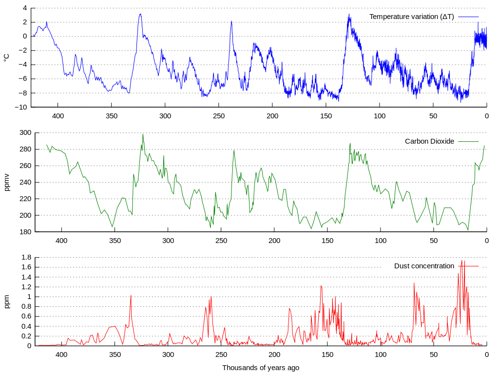

< < < Back
4 Things In Common Between “Rape Culture” And Roofie Hysteria – Return Of Kings
Let’s talk roofies. Everyone has heard stories about some poor girl whose drink was spiked with rohypnol and who woke up naked in a room with a guy, without any memory of how she got there or what happened the night before.
Many women are keenly aware of these stories and always keep an eye on their drinks, ever vigilant for unseen predators prowling the bars and clubs, ready to pounce on an unattended drink and spike it with roofies or other drugs so they can take advantage of the girl, once she is incapacitated.
In the UK, the National Health Service dedicated a page full of warnings to spiked drinks, Australia has a similar page, and supermarkets are stocked with devices to test drinks for drugs, including the roofie-detecting straw pictured above.
But how often are drinks spiked? A survey by researchers from the University of Kent among UK students showed that 55% of the participants knew someone who had something slipped into her drink, suggesting this phenomenon is widespread.
However, this assumption is wrong. A 2007 study performed blood tests of people (82% female) who came to the emergency ward of an inner city London hospital, claiming their drinks had been spiked. The vast majority was merely very drunk and, in other cases, medicinal or illicit drugs were detected. Rohypnol was not found.
An Australian study from 2009 came to similar conclusions, where none of the 97 people who visited an emergency ward for drink spiking were found to have been roofied. Most people were blind drunk instead of drugged. Let these results sink in for a moment.
In both studies, dozens of people, mostly women, showed up at an ER, claiming to be victims of drink spiking. Subsequent blood testing did not find supporting evidence in even a single case! Likewise, policing authorities in The UK and Australia found little evidence for so-called drug-facilitated sexual assault, noting that it is:
improbable as a widespread crime, involving as it does a stranger extracting an individual from her social group unnoticed, precisely controlling drug effects, administering a substance undetected, and reliably erasing memory of the experience
So, the idea that strangers are out and about trying to drug a girl’s drink are an urban legend without even a shred of substantial proof. But why do so many women believe that this is an imminent threat, and who do so many women claim that they personally know someone who got roofied?
The usefulness of the narrative to excuse bad behavior
The Kent study offers two interesting explanations, noting that: “the drink spiking narrative has a functional appeal in relation to the contemporary experience of young women’s public drinking.”
[the idea of drink spiking] has inspired a female code of conduct and a language that gives license to binge-drinking. Alcohol consumption was very rarely explicitly framed as a problem, and limiting alcohol intake was very rarely seen as a means of mitigating risks to one’s safety and health. Unprompted, respondents nonetheless felt the need to address the alcohol contribution in their accounts, if only to deny its role. There appears to be widespread disbelief, or active denial, that excess alcohol could cause the same incoherence, physical distress and incapacity associated with the date rape drugs.
In other words, the drink-spiking narrative provides hamster rocket fuel to rationalize bad behavior, in this case binge drinking and all the bad decisions that come with it, including deciding who to go home with. Wake up the next day, hung over, and being an innocent girl who got roofied is the more preferable explanation over being a sloppy drunk who makes bad life choices.
It also puts this story by a Vice writer typist who claimed to have been roofied three times in 18 months in a different, harsher light.
Heightened spiking concern can enhance a sense of group security and act as a substitute for acting upon the problems associated with drinking too much in public. Many UK interviewees invoked a sense of female camaraderie when speaking about going out, drinking, and drink-spiking. Women are frequently held up as people who look out for each other, drink-spiking incidents often involved a thoughtful female friend stepping in and taking someone home ‘before it was too late’. [This] opens up the possibility for women to express an ethic of care towards others, and this is made possible by the ready-made discourse and narrative that convey the perils of drink-spiking
In that sense, the “drink-spiking” urban myth is very similar to the “rape culture” urban myth, which offers an identical protection mechanism to rationalize bad behavior away, without being held accountable. Here are four parallels:
1. Rationalizing regrettable decisions

When a girl who comes to regret a sexual encounter she can, at any point and without any evidence, change that encounter into rape. Prominent feminists have proclaimed that we should always believe a rape accuser. A girl accusing a man of sexual assault now calls herself a “survivor,” a term that used to be reserved for people from my grandmother’s generation who survived the Nazi concentration camps during WWII. In doing so, she tries to claim special victim status that automagically shields her from criticism.
2. Not supported by any hard data

Just as there is no hard data underlying the drink-spiking narrative, the data that was supposed to prove the rape culture narrative turned out to be highly unreliable. The canard that 1 in 5 college women are raped keeps rearing its much discredited head, despite more recent studies showing that the real number, according to the Bureau of Justice statistics, is one in 53.
Still too many, but nowhere near the vaunted one in five. Instead of celebrating this much-reduced number, feminists seemed mostly disappointed at this massive blow against rape culture.
3. Allows women to show they care about each other, without tackling a real problem

In both the drink-spiking and the rape culture narrative, danger lurks in every corner. Women can show how much they care about one another by protecting them from men who are keen to take advantage of their vulnerability. Where the drink-spiking myth merely focuses on dangers associated with drinking, the rape culture myth casts its net much wider.
Men everywhere are suspect all the time, so women need protection everywhere, all the time. By fighting this imaginary danger, a woman can show how much she cares. The internet only serves as a platform that magnifies all this empathy flowing outwards in a most attractive way.
4. Everybody knows the narrative

Both urban myths consist of a popular narrative that everyone heard of but no one has seen. Just as everyone heard the story of girls being roofied and raped, everyone has heard rumors about student fraternities are hotbeds of misogyny, populated by rapist white males who are keen to violate the innocent little coeds in drunken, drug-fueled initiation rites.
Rolling Stone’s Sabrina Erdely was so convinced that this story was real that she went rape-shopping, traveling from campus to campus interviewing rape accusers, until she found someone who could tell her the story she wanted to hear. We all know how what happened next.
Thankfully, both have been thoroughly discredited by proper research. Even the rape culture myth has been denounced, both in popular media and by the Rape Abuse & Incest National Network, the most prominent US organization fighting sexual violence. In a press release, they stated that:
Rape is caused not by cultural factors but by the conscious decisions, of a small percentage of the community, to commit a violent crime.
In other words, do not mistake the hamsterizations of a small minority of vocal feminists to be descriptive of Western culture as a whole. After all, it is puzzling that feminists pump so much energy into their cherished but discredited narrative about Western rape culture while simultaneously ignoring the very real rape culture that was uncovered in the UK, where groups of Muslim immigrants were found to have organized abuse of hundreds of girls in both Rotherham and Oxford.
Read More: The Myth of Date Rape Drink Spiking


{kind=link}
{kind=link}